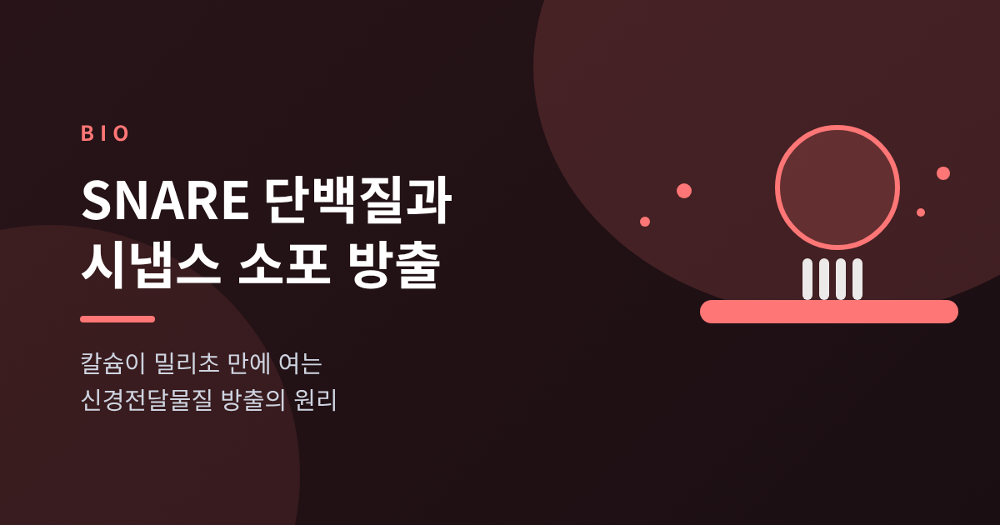
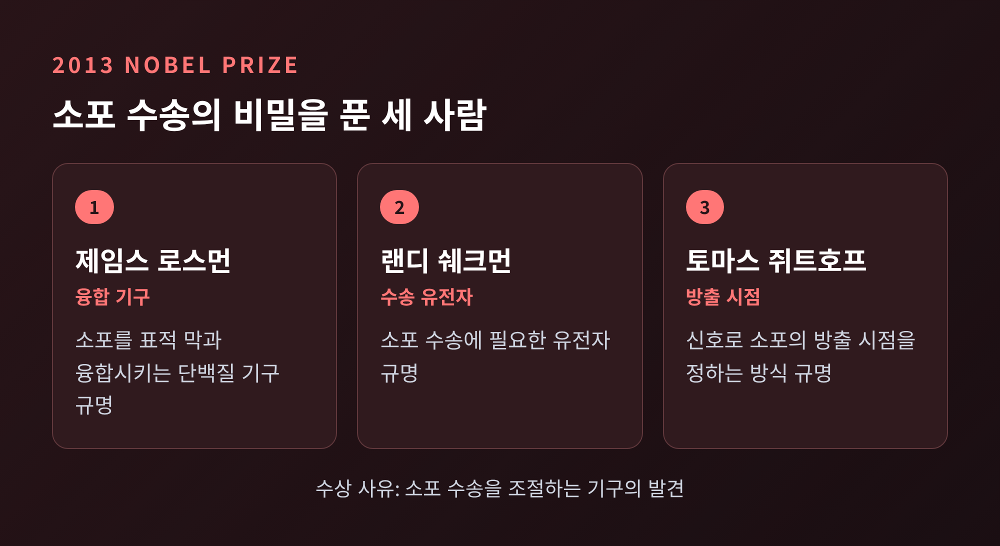
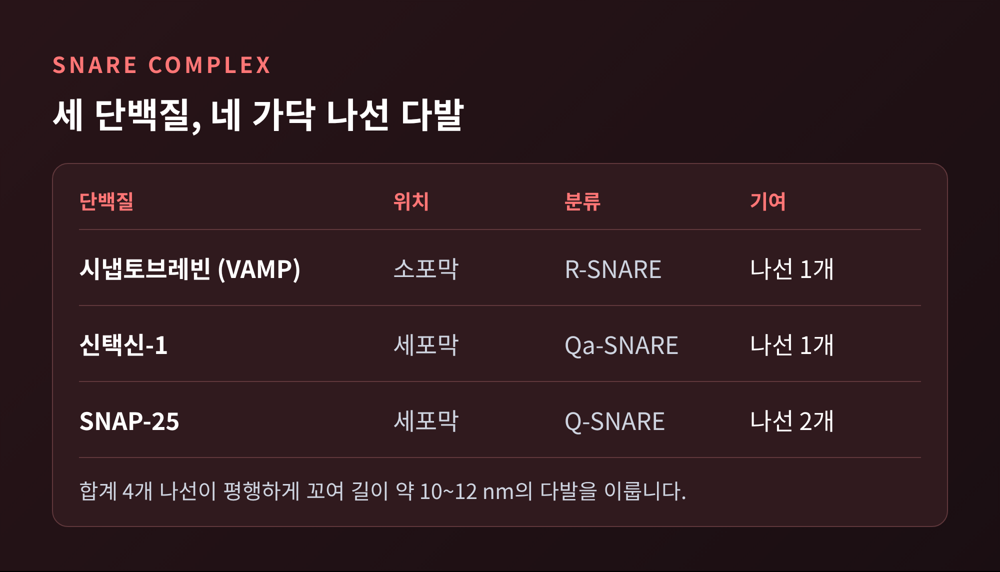
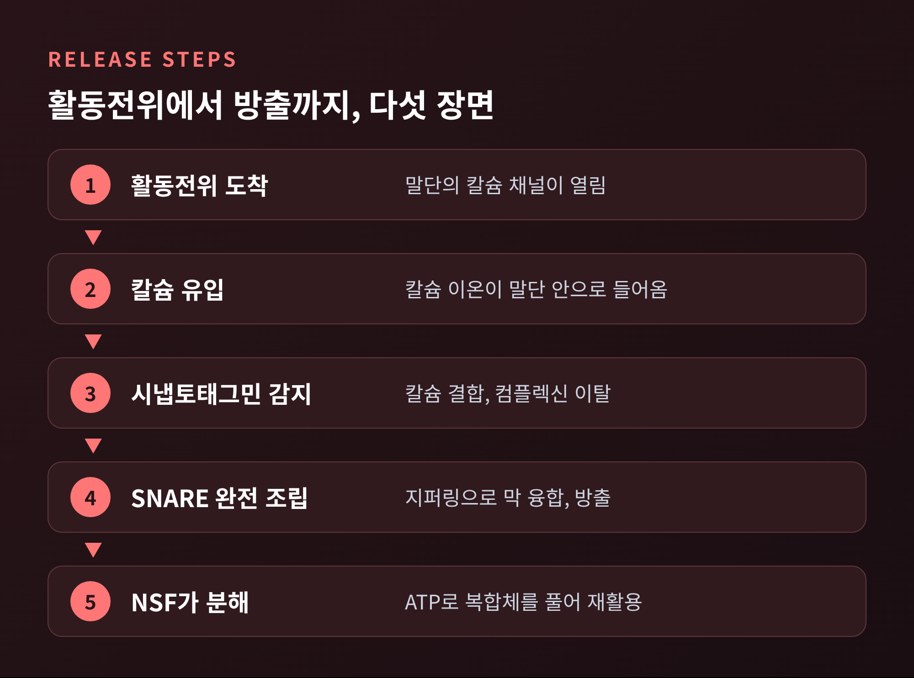
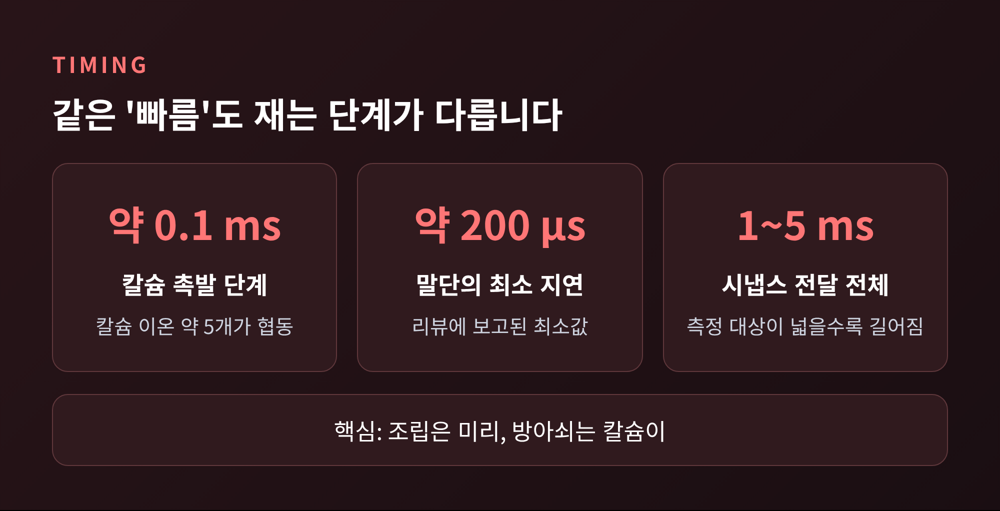
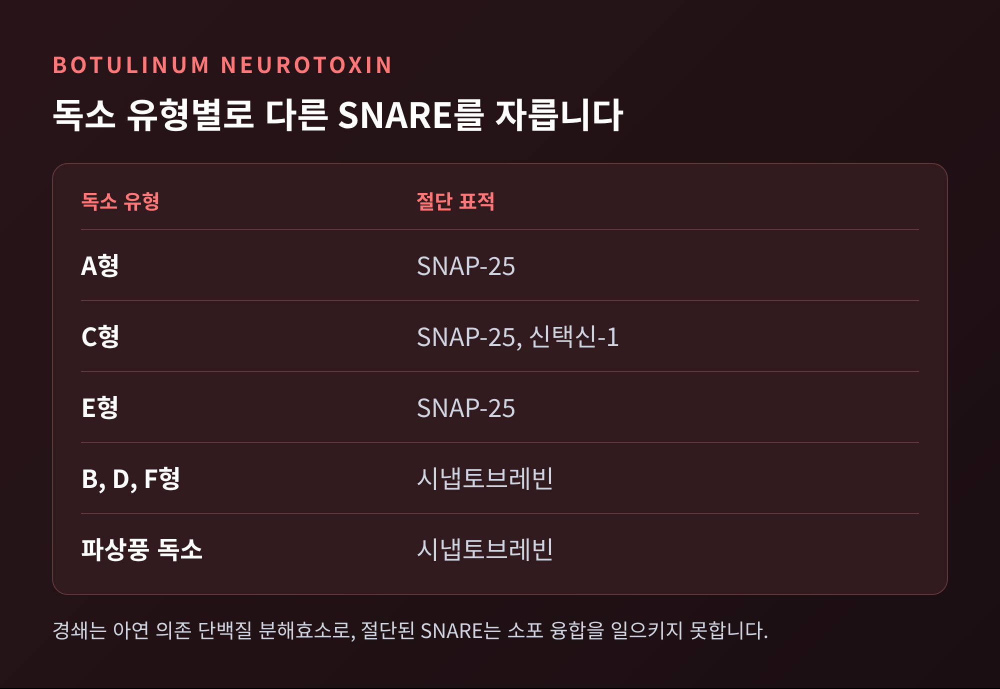

신경세포 끝에 전기 신호가 도착하면 1,000분의 1초 안에 화학 신호가 튀어나옵니다.
이번 글에서는 SNARE 단백질이 시냅스 소포를 세포막과 합치는 과정, 그리고 칼슘이 그 방아쇠를 당기는 원리를 정리해 보겠습니다.
2013년 노벨 생리의학상이 바로 이 기구를 밝힌 연구에 돌아갔고, 보툴리눔 독소가 어떻게 이 기구를 끊는지도 함께 다룹니다. 교양 차원의 설명이며 의학적 조언은 아닙니다.
세 줄 요약
2013년 노벨 생리의학상은 제임스 로스먼, 랜디 쉐크먼, 토마스 쥐트호프가 함께 받았습니다.
수상 사유는 "소포 수송을 조절하는 기구의 발견"입니다.
세포는 인슐린이나 신경전달물질 같은 분자를 소포라는 작은 막 주머니에 담아 옮깁니다.
문제는 화물이 엉뚱한 곳에 내리지 않도록 하는 일입니다. 세 사람은 이 질서를 만드는 분자 원리를 나누어 밝혔습니다.
쉐크먼은 소포 수송에 필요한 유전자를 찾았습니다.
로스먼은 소포가 표적과 융합하게 하는 단백질 기구를 규명했습니다.
쥐트호프는 신호가 소포의 방출 시점을 정밀하게 정하는 방식을 보였습니다.
이 체계가 흔들리면 신경 질환, 당뇨병, 면역 질환과도 이어진다고 알려져 있습니다.

신경 말단의 핵심 SNARE 단백질은 세 종류입니다.
소포 막에 있는 시냅토브레빈(VAMP), 세포막에 있는 신택신-1과 SNAP-25입니다.
시냅토브레빈과 신택신은 각각 나선 하나, SNAP-25는 나선 둘을 내놓습니다.
이 네 가닥이 나란히 꼬여 길이 약 10~12 nm의 단단한 다발을 이룹니다.
신택신과 시냅토브레빈은 막관통 도메인으로 박혀 있고, SNAP-25는 지질 꼬리로 막에 붙어 있습니다.
조립은 한 번에 끝나지 않습니다.
다발은 지퍼를 올리듯 한쪽 끝에서 다른 쪽 끝으로 조여집니다. 이를 지퍼링이라 부릅니다.
이때 생기는 결합 에너지가 두 막을 끌어당겨 맞붙이고, 막이 합쳐지는 통로인 융합 구멍을 엽니다.
1998년 Cell에 실린 연구에서는 인공 소포에 SNARE만 넣어도 막 융합이 일어났습니다.
SNARE가 융합의 최소 기계라는 뜻입니다.

방출 과정은 크게 네 단계로 나눌 수 있습니다.
첫째는 도킹과 프라이밍입니다.
소포는 세포막 가까이 자리를 잡고, SNARE 복합체를 일부만 조립해 둡니다.
이 준비 과정에는 Munc13과 RIM 단백질이 관여하고, Munc18은 신택신을 잡아 조립을 돕습니다.
Munc13-1과 Munc13-2를 모두 없애면 신경전달물질 방출이 완전히 막힌다고 보고되었습니다.
둘째는 장전된 상태의 유지입니다.
컴플렉신이 반쯤 조립된 복합체에 붙어 안전장치처럼 방아쇠를 잡고 있습니다.
셋째는 칼슘 유입입니다.
활동전위가 말단에 닿으면 전압의존성 칼슘 채널이 열리고 칼슘이 쏟아져 들어옵니다.
칼슘 채널은 소포에서 멀지 않습니다. 해마의 한 중간신경세포에서는 채널과 소포 사이가 약 10~20 nm로 보고되었습니다.
넷째는 시냅토태그민의 감지와 융합입니다.
시냅토태그민은 소포 막의 단백질로, C2A와 C2B라는 두 개의 칼슘 결합 부위를 가졌습니다.
칼슘이 붙으면 시냅토태그민은 세포막 지질과 SNARE에 단단히 결합하고, 컴플렉신을 밀어냅니다.
안전장치가 풀린 복합체는 끝까지 조여지고, 소포는 막과 합쳐져 신경전달물질을 쏟아 냅니다.
쥐트호프 연구진은 시냅토태그민이 없는 쥐를 만들어 이를 확인했습니다.
융합 기구는 멀쩡한데 칼슘에 반응하는 빠른 방출만 사라졌습니다. 칼슘 센서임을 보여 주는 결정적 증거였습니다.

방출이 끝나면 SNARE는 같은 막 위에 엉킨 채 남습니다.
α-SNAP이 달라붙고, NSF라는 단백질이 ATP를 써서 복합체를 풉니다.
시냅토브레빈은 소포로 돌아가 다음 순서를 기다립니다. 소포가 방출, 회수, 재형성을 거치는 데 1분이 채 걸리지 않습니다.
신경 말단에 칼슘이 들어와 소포가 터지기까지는 1밀리초도 걸리지 않습니다.
다만 수치는 어느 단계를 재느냐에 따라 달라집니다.
쥐트호프의 강연 자료에서 칼슘이 융합을 촉발하는 단계는 약 0.1밀리초입니다. 칼슘 이온 약 5개가 협동하는 단계이기도 합니다.
시냅스 전달 전체는 1~5밀리초로 소개됩니다.
또 다른 리뷰는 시냅스 말단의 최소 지연을 약 200마이크로초로 적었습니다.
어떻게 이렇게 빠를 수 있을까요?
예전엔 조립 전체가 칼슘 뒤에 일어난다고 상상하기 쉬웠다면, 지금의 설명은 정반대입니다. 조립은 대부분 미리 끝나 있고, 칼슘은 마지막 방아쇠만 당깁니다.
장전된 총과 같습니다. 방아쇠 당기는 일은 순식간입니다.
물론 매번 방출되지는 않습니다.
전형적인 전뇌 시냅스에서 활동전위 하나가 소포 융합을 일으킬 확률은 약 15%로 보고됩니다.
빠르지만 확률적인 장치라는 점도 기억해 둘 만합니다.

보툴리눔 독소는 이 정교한 기구를 겨냥합니다.
독소는 약 100 kDa의 중쇄와 약 50 kDa의 경쇄가 이황화 결합으로 묶인 구조입니다.
중쇄는 콜린성 신경 말단의 수용체에 달라붙습니다. 수용체 가운데에는 시냅토태그민도 포함됩니다.
독소는 세포 안으로 실려 들어가고, 소포가 산성화되면 일부가 세포질로 넘어옵니다.
여기서 아연 의존 단백질 분해효소인 경쇄가 SNARE를 자릅니다.
혈청형마다 표적이 다릅니다.
A, C, E형은 SNAP-25를 자르고, C형은 신택신-1도 자릅니다.
B, D, F형은 시냅토브레빈을 자릅니다.
파상풍 독소도 시냅토브레빈의 Gln76-Phe77 사이를 끊습니다.
SNARE가 끊어지면 소포는 막과 합쳐지지 못하고 아세틸콜린 방출이 멈춥니다. 그 결과가 이완성 마비입니다.
회복은 독소가 힘을 잃고 세포가 SNARE를 다시 만들면서 서서히 이루어집니다. 미용 목적의 효과가 보통 2~4개월 가는 이유입니다.
세계보건기구에 따르면 사람에게 병을 일으키는 독소형은 주로 A, B, E형입니다.
보톡스는 정제해 크게 희석한 A형이며 의료 현장에서 쓰입니다.
독소의 위험성과 용도 모두 의료인의 판단 영역입니다. 이 글은 원리를 소개할 뿐입니다.

SNARE 이야기가 모두 정리된 것은 아닙니다.
시냅토태그민 아이소폼의 수만 해도 자료에 따라 16종, 17종으로 다르게 적혀 있습니다.
빠른 방출은 시냅토태그민-1, 2, 9가, 느린 방출은 시냅토태그민-7이 맡는다는 구도 역시 연구가 이어지는 중입니다.
칼슘 채널과 소포의 거리도 시냅스 종류에 따라 10 nm대부터 75 nm까지 폭넓게 보고됩니다.
정리하면 이렇습니다.
미리 장전된 SNARE와 컴플렉신, 칼슘을 감지하는 시냅토태그민이 한 팀으로 움직이기에 신경 신호는 밀리초 안에 건너갑니다.
그리고 독소는 그 팀의 한 선수만 잘라도 전체를 멈춥니다.
"조립은 미리, 방아쇠는 칼슘이."
신호가 한 신경세포에서 다음 세포로 건너가는 그 짧은 순간마다 단백질 지퍼가 올라간다고 떠올려 보면, 몸이 조금 새롭게 느껴지지 않으시겠습니까.